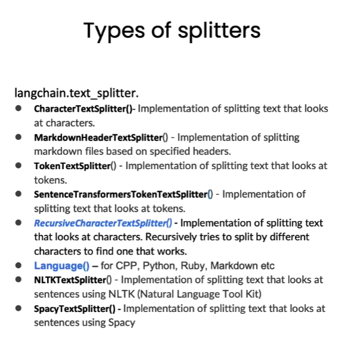

第三章 文档分割⚓︎
在上一章中，我们刚刚讨论了如何将文档加载到标准格式中，现在我们要谈论如何将它们分割成较小的块。这听起来可能很简单，但其中有很多微妙之处会对后续工作产生重要影响。
一、为什么要进行文档分割⚓︎
- 模型大小和内存限制：GPT 模型，特别是大型版本如 GPT-3 或 GPT-4 ，具有数十亿甚至上百亿的参数。为了在一次前向传播中处理这么多的参数，需要大量的计算能力和内存。但是，大多数硬件设备（例如 GPU 或 TPU ）有内存限制。文档分割使模型能够在这些限制内工作。
- 计算效率：处理更长的文本序列需要更多的计算资源。通过将长文档分割成更小的块，可以更高效地进行计算。
- 序列长度限制：GPT 模型有一个固定的最大序列长度，例如2048个 token 。这意味着模型一次只能处理这么多 token 。对于超过这个长度的文档，需要进行分割才能被模型处理。
- 更好的泛化：通过在多个文档块上进行训练，模型可以更好地学习和泛化到各种不同的文本样式和结构。
- 数据增强：分割文档可以为训练数据提供更多的样本。例如，一个长文档可以被分割成多个部分，并分别作为单独的训练样本。
需要注意的是，虽然文档分割有其优点，但也可能导致一些上下文信息的丢失，尤其是在分割点附近。因此，如何进行文档分割是一个需要权衡的问题。

若仅按照单一字符进行文本分割，很容易使文本的语义信息丧失，这样在回答问题时可能会出现偏差。因此，为了确保语义的准确性，我们应该尽量将文本分割为包含完整语义的段落或单元。
二、文档分割方式⚓︎
Langchain 中文本分割器都根据 chunk_size (块大小)和 chunk_overlap (块与块之间的重叠大小)进行分割。

-
chunk_size 指每个块包含的字符或 Token （如单词、句子等）的数量
-
chunk_overlap 指两个块之间共享的字符数量，用于保持上下文的连贯性，避免分割丢失上下文信息

Langchain提供多种文档分割方式，区别在怎么确定块与块之间的边界、块由哪些字符/token组成、以及如何测量块大小
三、基于字符分割⚓︎
如何进行文本分割，往往与我们的任务类型息息相关。当我们拆分代码时，这种相关性变得尤为突出。因此，我们引入了一个语言文本分割器，其中包含各种为 Python、Ruby、C 等不同编程语言设计的分隔符。在对这些文档进行分割时，必须充分考虑各种编程语言之间的差异。
我们将从基于字符的分割开始探索，借助 LangChain 提供的 RecursiveCharacterTextSplitter 和 CharacterTextSplitter 工具来实现此目标。
CharacterTextSplitter 是字符文本分割，分隔符的参数是单个的字符串；RecursiveCharacterTextSplitter 是递归字符文本分割，将按不同的字符递归地分割（按照这个优先级["\n\n", "\n", " ", ""]），这样就能尽量把所有和语义相关的内容尽可能长时间地保留在同一位置。因此，RecursiveCharacterTextSplitter 比 CharacterTextSplitter 对文档切割得更加碎片化
RecursiveCharacterTextSplitter 需要关注的是如下4个参数：
separators- 分隔符字符串数组chunk_size- 每个文档的字符数量限制chunk_overlap- 两份文档重叠区域的长度length_function- 长度计算函数
3.1 短句分割⚓︎
# 导入文本分割器
from langchain.text_splitter import RecursiveCharacterTextSplitter, CharacterTextSplitter
chunk_size = 20 #设置块大小
chunk_overlap = 10 #设置块重叠大小
# 初始化递归字符文本分割器
r_splitter = RecursiveCharacterTextSplitter(
chunk_size=chunk_size,
chunk_overlap=chunk_overlap
)
# 初始化字符文本分割器
c_splitter = CharacterTextSplitter(
chunk_size=chunk_size,
chunk_overlap=chunk_overlap
)
接下来我们对比展示两个字符文本分割器的效果。
text = "在AI的研究中，由于大模型规模非常大，模型参数很多，在大模型上跑完来验证参数好不好训练时间成本很高，所以一般会在小模型上做消融实验来验证哪些改进是有效的再去大模型上做实验。" #测试文本
r_splitter.split_text(text)
['在AI的研究中，由于大模型规模非常大，模',
'大模型规模非常大，模型参数很多，在大模型',
'型参数很多，在大模型上跑完来验证参数好不',
'上跑完来验证参数好不好训练时间成本很高，',
'好训练时间成本很高，所以一般会在小模型上',
'所以一般会在小模型上做消融实验来验证哪些',
'做消融实验来验证哪些改进是有效的再去大模',
'改进是有效的再去大模型上做实验。']
可以看到，分割结果中，第二块是从“大模型规模非常大，模”开始的，刚好是我们设定的块重叠大小
#字符文本分割器
c_splitter.split_text(text)
['在AI的研究中，由于大模型规模非常大，模型参数很多，在大模型上跑完来验证参数好不好训练时间成本很高，所以一般会在小模型上做消融实验来验证哪些改进是有效的再去大模型上做实验。']
可以看到字符分割器没有分割这个文本，因为字符文本分割器默认以换行符为分隔符，因此需要设置“，”为分隔符。
# 设置空格分隔符
c_splitter = CharacterTextSplitter(
chunk_size=chunk_size,
chunk_overlap=chunk_overlap,
separator='，'
)
c_splitter.split_text(text)
Created a chunk of size 23, which is longer than the specified 20
['在AI的研究中，由于大模型规模非常大',
'由于大模型规模非常大，模型参数很多',
'在大模型上跑完来验证参数好不好训练时间成本很高',
'所以一般会在小模型上做消融实验来验证哪些改进是有效的再去大模型上做实验。']
设置“，”为分隔符后，分割效果与递归字符文本分割器类似。
可以看到出现了提示"Created a chunk of size 23, which is longer than the specified 20"，意思是“创建了一个长度为23的块，这比指定的20要长。”。这是因为
CharacterTextSplitter优先使用我们自定义的分隔符进行分割，所以在长度上会有较小的差距
3.2 长文本分割⚓︎
接下来，我们来尝试对长文本进行分割。
# 中文版
some_text = """在编写文档时，作者将使用文档结构对内容进行分组。 \
这可以向读者传达哪些想法是相关的。 例如，密切相关的想法\
是在句子中。 类似的想法在段落中。 段落构成文档。 \n\n\
段落通常用一个或两个回车符分隔。 \
回车符是您在该字符串中看到的嵌入的“反斜杠 n”。 \
句子末尾有一个句号，但也有一个空格。\
并且单词之间用空格分隔"""
print(len(some_text))
177
我们使用以上长文本作为示例。
c_splitter = CharacterTextSplitter(
chunk_size=80,
chunk_overlap=0,
separator=' '
)
'''
对于递归字符分割器，依次传入分隔符列表，分别是双换行符、单换行符、空格、空字符，
因此在分割文本时，首先会采用双分换行符进行分割，同时依次使用其他分隔符进行分割
'''
r_splitter = RecursiveCharacterTextSplitter(
chunk_size=80,
chunk_overlap=0,
separators=["\n\n", "\n", " ", ""]
)
字符分割器结果：
c_splitter.split_text(some_text)
['在编写文档时，作者将使用文档结构对内容进行分组。 这可以向读者传达哪些想法是相关的。 例如，密切相关的想法 是在句子中。 类似的想法在段落中。 段落构成文档。',
'段落通常用一个或两个回车符分隔。 回车符是您在该字符串中看到的嵌入的“反斜杠 n”。 句子末尾有一个句号，但也有一个空格。 并且单词之间用空格分隔']
递归字符分割器效果：
r_splitter.split_text(some_text)
['在编写文档时，作者将使用文档结构对内容进行分组。 这可以向读者传达哪些想法是相关的。 例如，密切相关的想法 是在句子中。 类似的想法在段落中。',
'段落构成文档。',
'段落通常用一个或两个回车符分隔。 回车符是您在该字符串中看到的嵌入的“反斜杠 n”。 句子末尾有一个句号，但也有一个空格。',
'并且单词之间用空格分隔']
如果需要按照句子进行分隔，则还要用正则表达式添加一个句号分隔符
r_splitter = RecursiveCharacterTextSplitter(
chunk_size=30,
chunk_overlap=0,
separators=["\n\n", "\n", "(?<=\。 )", " ", ""]
)
r_splitter.split_text(some_text)
['在编写文档时，作者将使用文档结构对内容进行分组。',
'这可以向读者传达哪些想法是相关的。',
'例如，密切相关的想法 是在句子中。',
'类似的想法在段落中。 段落构成文档。',
'段落通常用一个或两个回车符分隔。',
'回车符是您在该字符串中看到的嵌入的“反斜杠 n”。',
'句子末尾有一个句号，但也有一个空格。',
'并且单词之间用空格分隔']
这就是递归字符文本分割器名字中“递归”的含义，总的来说，我们更建议在通用文本中使用递归字符文本分割器
四、基于 Token 分割⚓︎
很多 LLM 的上下文窗口长度限制是按照 Token 来计数的。因此，以 LLM 的视角，按照 Token 对文本进行分隔，通常可以得到更好的结果。 通过一个实例理解基于字符分割和基于 Token 分割的区别
# 使用token分割器进行分割，
# 将块大小设为1，块重叠大小设为0，相当于将任意字符串分割成了单个Token组成的列
from langchain.text_splitter import TokenTextSplitter
text_splitter = TokenTextSplitter(chunk_size=1, chunk_overlap=0)
text = "foo bar bazzyfoo"
text_splitter.split_text(text)
# 注：目前 LangChain 基于 Token 的分割器还不支持中文
['foo', ' bar', ' b', 'az', 'zy', 'foo']
可以看出token长度和字符长度不一样，token通常为4个字符
五、分割Markdown文档⚓︎
5.1 分割一个自定义 Markdown 文档⚓︎
分块的目的是把具有上下文的文本放在一起，我们可以通过使用指定分隔符来进行分隔，但有些类型的文档（例如 Markdown ）本身就具有可用于分割的结构（如标题）。
Markdown 标题文本分割器会根据标题或子标题来分割一个 Markdown 文档，并将标题作为元数据添加到每个块中
# 定义一个Markdown文档
from langchain.document_loaders import NotionDirectoryLoader#Notion加载器
from langchain.text_splitter import MarkdownHeaderTextSplitter#markdown分割器
markdown_document = """# Title\n\n \
## 第一章\n\n \
李白乘舟将欲行\n\n 忽然岸上踏歌声\n\n \
### Section \n\n \
桃花潭水深千尺 \n\n
## 第二章\n\n \
不及汪伦送我情"""
我们以上述文本作为 Markdown 文档的示例，上述文本格式遵循了 Markdown 语法，如读者对该语法不了解，可以简单查阅该教程 ：Markdown 教程
# 定义想要分割的标题列表和名称
headers_to_split_on = [
("#", "Header 1"),
("##", "Header 2"),
("###", "Header 3"),
]
markdown_splitter = MarkdownHeaderTextSplitter(
headers_to_split_on=headers_to_split_on
)#message_typemessage_type
md_header_splits = markdown_splitter.split_text(markdown_document)
print("第一个块")
print(md_header_splits[0])
print("第二个块")
print(md_header_splits[1])
第一个块
page_content='李白乘舟将欲行 \n忽然岸上踏歌声' metadata={'Header 1': 'Title', 'Header 2': '第一章'}
第二个块
page_content='桃花潭水深千尺' metadata={'Header 1': 'Title', 'Header 2': '第一章', 'Header 3': 'Section'}
可以看到，每个块都包含了页面内容和元数据，元数据中记录了该块所属的标题和子标题。
5.2 分割数据库中的 Markdown 文档⚓︎
在上一章中，我们尝试了 Notion 数据库的加载，Notion 文档就是一个 Markdown 文档。我们在此处加载 Notion 数据库中的文档并进行分割。
#加载数据库的内容
loader = NotionDirectoryLoader("docs/Notion_DB")
docs = loader.load()
txt = ' '.join([d.page_content for d in docs])#拼接文档
headers_to_split_on = [
("#", "Header 1"),
("##", "Header 2"),
]
#加载文档分割器
markdown_splitter = MarkdownHeaderTextSplitter(
headers_to_split_on=headers_to_split_on
)
md_header_splits = markdown_splitter.split_text(txt)#分割文本内容
print(md_header_splits[0])#分割结果
page_content='Let’s talk about stress. Too much stress. \nWe know this can be a topic. \nSo let’s get this conversation going. \n[Intro: two things you should know](#letstalkaboutstress%2064040a0733074994976118bbe0acc7fb/Intro%20two%20things%20you%20should%20know%20b5fd0c5393a9498b93396e79fe71e8bf.md) \n[What is stress](#letstalkaboutstress%2064040a0733074994976118bbe0acc7fb/What%20is%20stress%20b198b685ed6a474ab14f6fafff7004b6.md) \n[When is there too much stress?](#letstalkaboutstress%2064040a0733074994976118bbe0acc7fb/When%20is%20there%20too%20much%20stress%20dc135b9a86a843cbafd115aa128c5c90.md) \n[What can I do](#letstalkaboutstress%2064040a0733074994976118bbe0acc7fb/What%20can%20I%20do%2009c1b13703ef42d4a889e2059c5b25fe.md) \n[What can Blendle do?](#letstalkaboutstress%2064040a0733074994976118bbe0acc7fb/What%20can%20Blendle%20do%20618ab89df4a647bf96e7b432af82779f.md) \n[Good reads](#letstalkaboutstress%2064040a0733074994976118bbe0acc7fb/Good%20reads%20e817491d84d549f886af972e0668192e.md) \nGo to **#letstalkaboutstress** on slack to chat about this topic' metadata={'Header 1': '#letstalkaboutstress'}
六、英文版⚓︎
3.1 短句分割
#导入文本分割器
from langchain.text_splitter import RecursiveCharacterTextSplitter, CharacterTextSplitter
chunk_size = 26 #设置块大小
chunk_overlap = 4 #设置块重叠大小
#初始化文本分割器
r_splitter = RecursiveCharacterTextSplitter(
chunk_size=chunk_size,
chunk_overlap=chunk_overlap
)
c_splitter = CharacterTextSplitter(
chunk_size=chunk_size,
chunk_overlap=chunk_overlap
)
递归字符分割器效果
text = "a b c d e f g h i j k l m n o p q r s t u v w x y z"#测试文本
r_splitter.split_text(text)
['a b c d e f g h i j k l m', 'l m n o p q r s t u v w x', 'w x y z']
len(" l m n o p q r s t u v w x")
25
字符分割器效果
#字符文本分割器
c_splitter.split_text(text)
['a b c d e f g h i j k l m n o p q r s t u v w x y z']
设置空格为分隔符的字符分割器
# 设置空格分隔符
c_splitter = CharacterTextSplitter(
chunk_size=chunk_size,
chunk_overlap=chunk_overlap,
separator=' '
)
c_splitter.split_text(text)
['a b c d e f g h i j k l m', 'l m n o p q r s t u v w x', 'w x y z']
3.2 长文本分割
# 递归分割长段落
some_text = """When writing documents, writers will use document structure to group content. \
This can convey to the reader, which idea's are related. For example, closely related ideas \
are in sentances. Similar ideas are in paragraphs. Paragraphs form a document. \n\n \
Paragraphs are often delimited with a carriage return or two carriage returns. \
Carriage returns are the "backslash n" you see embedded in this string. \
Sentences have a period at the end, but also, have a space.\
and words are separated by space."""
c_splitter = CharacterTextSplitter(
chunk_size=450,
chunk_overlap=0,
separator=' '
)
'''
对于递归字符分割器，依次传入分隔符列表，分别是双换行符、单换行符、空格、空字符，
因此在分割文本时，首先会采用双分换行符进行分割，同时依次使用其他分隔符进行分割
'''
r_splitter = RecursiveCharacterTextSplitter(
chunk_size=450,
chunk_overlap=0,
separators=["\n\n", "\n", " ", ""]
)
字符分割器效果：
c_splitter.split_text(some_text)
['When writing documents, writers will use document structure to group content. This can convey to the reader, which idea\'s are related. For example, closely related ideas are in sentances. Similar ideas are in paragraphs. Paragraphs form a document. \n\n Paragraphs are often delimited with a carriage return or two carriage returns. Carriage returns are the "backslash n" you see embedded in this string. Sentences have a period at the end, but also,',
'have a space.and words are separated by space.']
递归字符分割器效果：
#分割结果
r_splitter.split_text(some_text)
["When writing documents, writers will use document structure to group content. This can convey to the reader, which idea's are related. For example, closely related ideas are in sentances. Similar ideas are in paragraphs. Paragraphs form a document.",
'Paragraphs are often delimited with a carriage return or two carriage returns. Carriage returns are the "backslash n" you see embedded in this string. Sentences have a period at the end, but also, have a space.and words are separated by space.']
增加按句子分割的效果：
r_splitter = RecursiveCharacterTextSplitter(
chunk_size=150,
chunk_overlap=0,
separators=["\n\n", "\n", "(?<=\. )", " ", ""]
)
r_splitter.split_text(some_text)
["When writing documents, writers will use document structure to group content. This can convey to the reader, which idea's are related.",
'For example, closely related ideas are in sentances. Similar ideas are in paragraphs. Paragraphs form a document.',
'Paragraphs are often delimited with a carriage return or two carriage returns.',
'Carriage returns are the "backslash n" you see embedded in this string.',
'Sentences have a period at the end, but also, have a space.and words are separated by space.']
4.1 基于 Token 分割
# 使用token分割器进行分割，
# 将块大小设为1，块重叠大小设为0，相当于将任意字符串分割成了单个Token组成的列
from langchain.text_splitter import TokenTextSplitter
text_splitter = TokenTextSplitter(chunk_size=1, chunk_overlap=0)
text1 = "foo bar bazzyfoo"
text_splitter.split_text(text1)
['foo', ' bar', ' b', 'az', 'zy', 'foo']
5.1 分割自定义 Markdown 文档
# 定义一个Markdown文档
from langchain.document_loaders import NotionDirectoryLoader#Notion加载器
from langchain.text_splitter import MarkdownHeaderTextSplitter#markdown分割器
markdown_document = """# Title\n\n \
## Chapter 1\n\n \
Hi this is Jim\n\n Hi this is Joe\n\n \
### Section \n\n \
Hi this is Lance \n\n
## Chapter 2\n\n \
Hi this is Molly"""
# 初始化Markdown标题文本分割器，分割Markdown文档
markdown_splitter = MarkdownHeaderTextSplitter(
headers_to_split_on=headers_to_split_on
)
md_header_splits = markdown_splitter.split_text(markdown_document)
print("The first chunk")
print(md_header_splits[0])
# Document(page_content='Hi this is Jim \nHi this is Joe', metadata={'Header 1': 'Title', 'Header 2': 'Chapter 1'})
print("The second chunk")
print(md_header_splits[1])
# Document(page_content='Hi this is Lance', metadata={'Header 1': 'Title', 'Header 2': 'Chapter 1', 'Header 3': 'Section'})
The first chunk
page_content='Hi this is Jim \nHi this is Joe \n### Section \nHi this is Lance' metadata={'Header 1': 'Title', 'Header 2': 'Chapter 1'}
The second chunk
page_content='Hi this is Molly' metadata={'Header 1': 'Title', 'Header 2': 'Chapter 2'}
5.2 分割数据库中的 Markdown 文档
#加载数据库的内容
loader = NotionDirectoryLoader("docs/Notion_DB")
docs = loader.load()
txt = ' '.join([d.page_content for d in docs])#拼接文档
headers_to_split_on = [
("#", "Header 1"),
("##", "Header 2"),
]
#加载文档分割器
markdown_splitter = MarkdownHeaderTextSplitter(
headers_to_split_on=headers_to_split_on
)
md_header_splits = markdown_splitter.split_text(txt)#分割文本内容
print(md_header_splits[0])#分割结果
page_content='Let’s talk about stress. Too much stress. \nWe know this can be a topic. \nSo let’s get this conversation going. \n[Intro: two things you should know](#letstalkaboutstress%2064040a0733074994976118bbe0acc7fb/Intro%20two%20things%20you%20should%20know%20b5fd0c5393a9498b93396e79fe71e8bf.md) \n[What is stress](#letstalkaboutstress%2064040a0733074994976118bbe0acc7fb/What%20is%20stress%20b198b685ed6a474ab14f6fafff7004b6.md) \n[When is there too much stress?](#letstalkaboutstress%2064040a0733074994976118bbe0acc7fb/When%20is%20there%20too%20much%20stress%20dc135b9a86a843cbafd115aa128c5c90.md) \n[What can I do](#letstalkaboutstress%2064040a0733074994976118bbe0acc7fb/What%20can%20I%20do%2009c1b13703ef42d4a889e2059c5b25fe.md) \n[What can Blendle do?](#letstalkaboutstress%2064040a0733074994976118bbe0acc7fb/What%20can%20Blendle%20do%20618ab89df4a647bf96e7b432af82779f.md) \n[Good reads](#letstalkaboutstress%2064040a0733074994976118bbe0acc7fb/Good%20reads%20e817491d84d549f886af972e0668192e.md) \nGo to **#letstalkaboutstress** on slack to chat about this topic' metadata={'Header 1': '#letstalkaboutstress'}
创建日期: November 25, 2023